話は以前訪れた神社からはじまる。
埼玉県鴻巣市にある三ツ木神社だ。
安産を祈願したメスの猿の石像がたくさん奉納されていて、その勢いに圧倒されたものだった。
（以前のレポートは
こちら）
その後、色々と調べてみるとメスの猿の石像の奉納習俗は
埼玉県下の日枝神社系列の神社に広く存在するみたい。
どうやら三ツ木神社のある鴻巣市や周辺の
北本市、久喜市、加須市、上尾市辺りがその習俗のホットゾーンであるようだ。
普通、全国の日枝神社ではオス猿の奉納がほとんどだ（極例外的に夫婦の猿という設定の奉納もあるが）。
ところがこの周辺の日枝神社、山王神社にはメスの猿の石像が奉納されている。
しかも
股間を広げ、局部は赤く塗る、というかなりアグレッシブな奉納物となっている。
そんな習俗がかなり広範囲で信仰されているとしたらこんな面白い奉納物を見に行かない手は無かろう。
という訳で今回はメス猿石像の奉納習俗を調査すべく埼玉県4市の日枝神社を訪ねてみる事にした。
ちなみに埼玉県に所縁のある人以外は上記の4市がどこにあるかすら判らないと思うが、大宮の北側の辺りです。
それでもイメージできない方は埼玉の外れの田んぼと畑がダーンと広がっている感じをイメージしていただけたら概ね間違いないです…。
で、最初に訪れたのは鴻巣市の
三ツ木神社。
やはりこの猿奉納のキングに再登場してもらわねばなるまい。
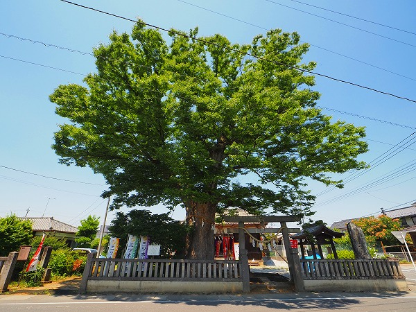
大欅が青々と葉を湛えていた。
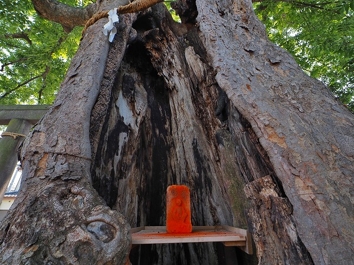
その洞の中には赤く塗られた猿の石像が置かれている。
再訪なので、ダイジェストでお送りしますよ。
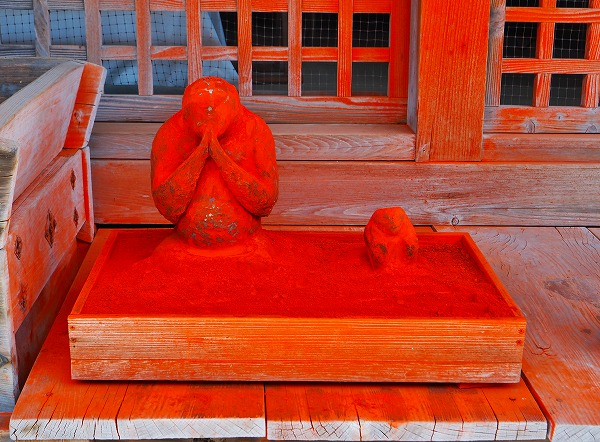
拝殿前の猿の像。
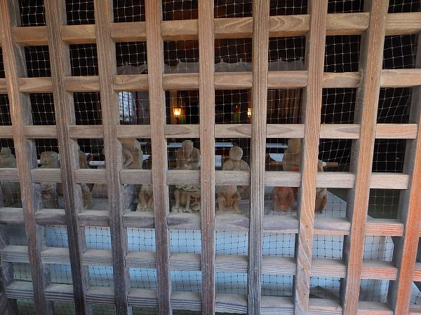
前回訪問時には気付かなかったが、拝殿内にも猿の像が並んでいた。
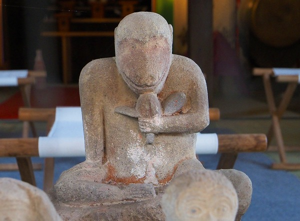
マイクを握っているのかと思ったら桃を食べているようだ。
猿が桃を食べる図像というのは古くから存在し、確か不老長寿を象徴している…んだと思いました、多分。
違ってたらご指摘ください。
そして拝殿脇の眷属殿。
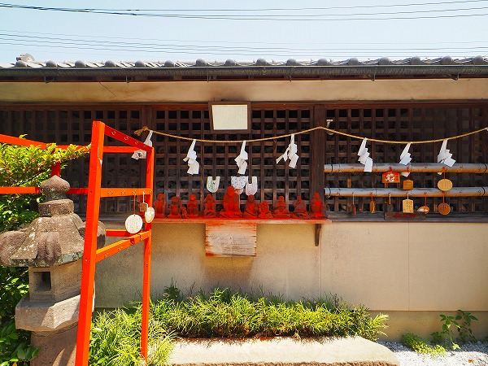
真っ赤な猿の奥には…
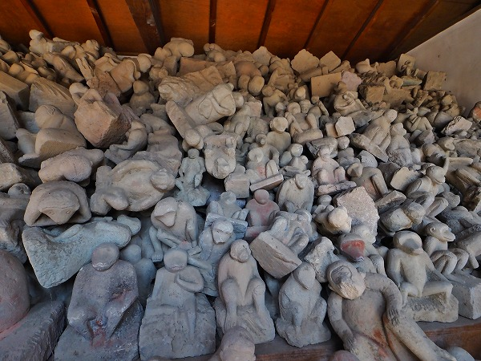
積み上げられたお猿さん達。
相変わらず凄いモッシュ具合だ。
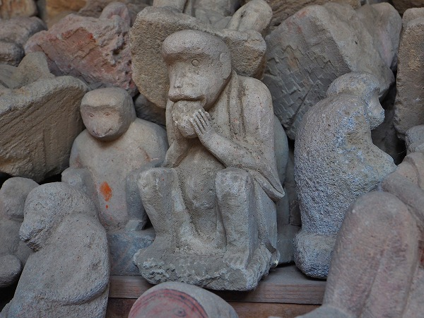
あ、桃食べてる。
さて、今回特筆すべきはこちらのおサルさんたち。
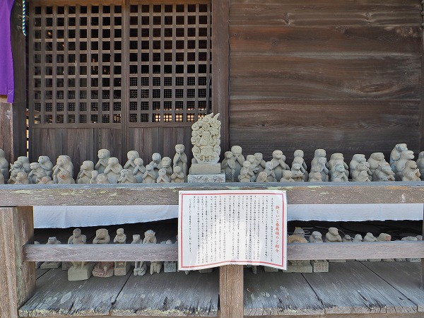
拝殿の右手に
大量の猿の石像が増えていた。
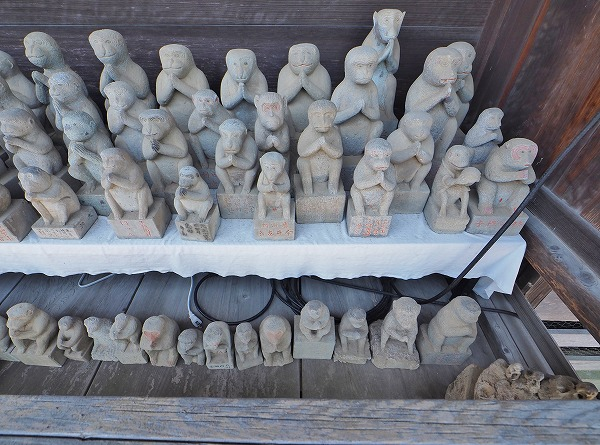
これは加須市にあった日枝神社が廃されるにあたってそこに奉納されていたお猿さんを迎えたのだとか。
皆整然と合掌していて
お行儀の良いお猿さん達である。
眷属殿のお猿さんとは対照的である。
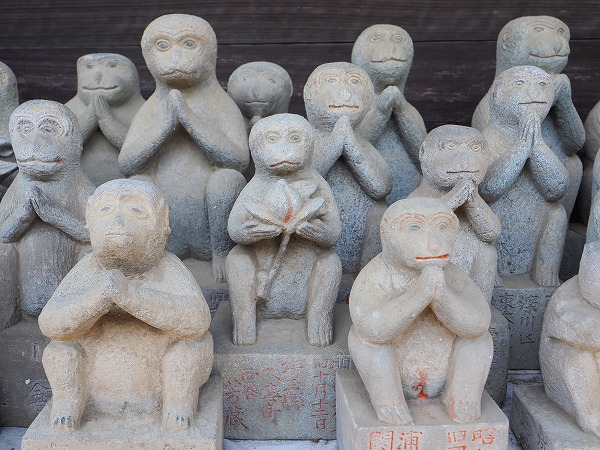
ここにも桃を持った猿が。
M字開脚、局部を赤く塗る、というのが基本スタイルとなっている。
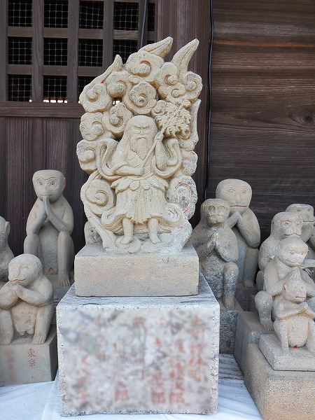
中央には山の神、なのだろうか。
中々の迫力だ。
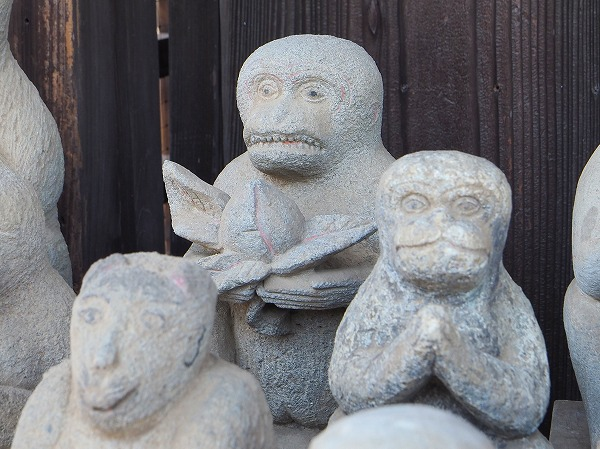
歯を剥き出している猿。
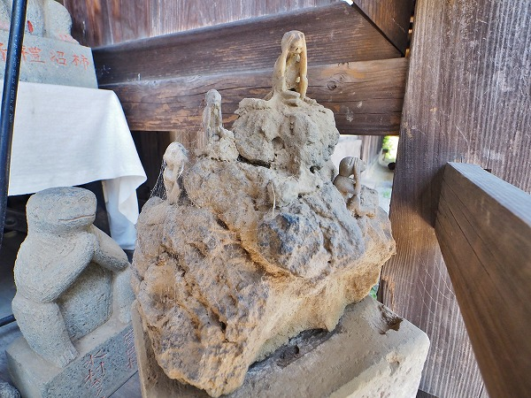
岩山の上に猿。
それでは他のモンキーを捜しに行きましょうか。
（2009.09，2024.06）
埼玉モンキーウオッチング、訪れたのは桶川市加納の
氷川天満宮。
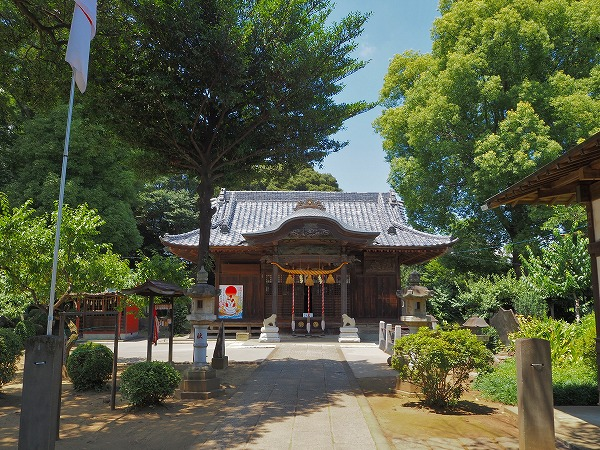
境内に御神水の井戸があり、魚が泳いでいた。
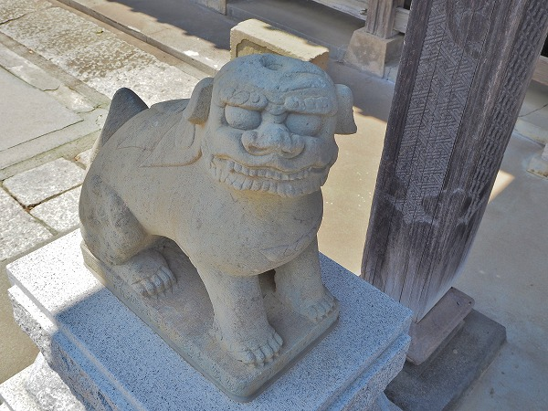
狛犬の頭に穴が開いている。
これが遠野だったらカッパ狛犬とか言われそう。
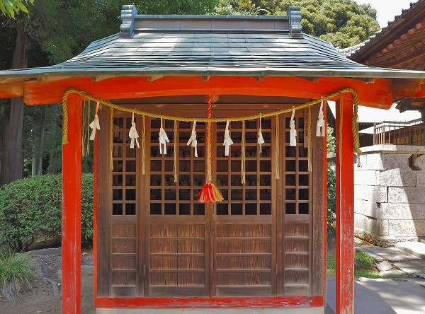
拝殿の脇に小さな建物がある。
これが
日枝神社である。
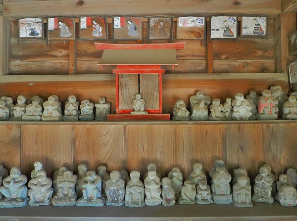
中にはたくさんの猿が並んでいた。
ここの猿もみな合掌している。
そういえば先程の三ツ木神社の眷属殿でモッシュしていたお猿たちは腕を下に下げていたが、加須から引っ越してきた猿は皆合掌していた。
この
合掌/非合掌の違いは何なのか？地域的な微妙な差異があるのか？
この辺も今後のウオッチングで探ってみたいと思う。
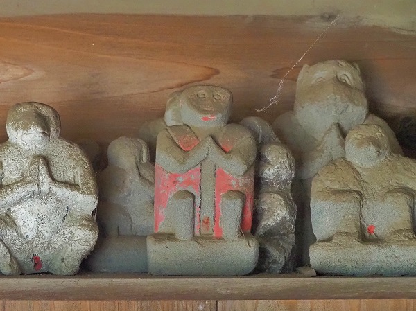
赤いちゃんちゃんこを着た猿。還暦でもなかろうに。
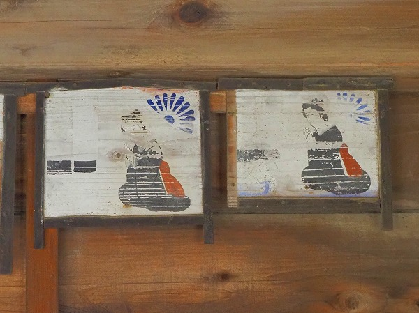
壁には拝み絵馬がたくさん架かっていた。
（2024.09.）
次に訪れたのは上尾市上の
山王社。
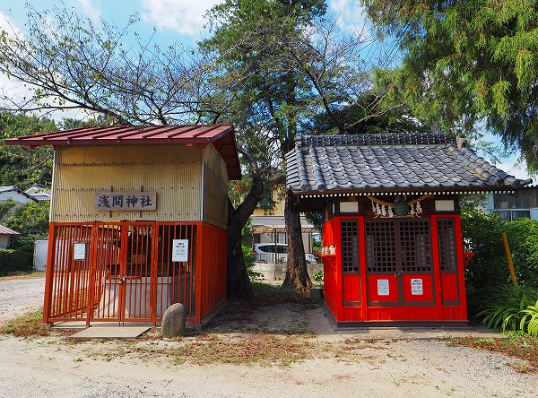
隣には浅間神社もある。
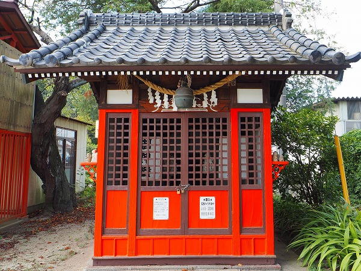
監視カメラで賽銭泥棒や無断駐車をチェックしてますよ的な貼り紙がしてあった。
何か物々しいなあ。
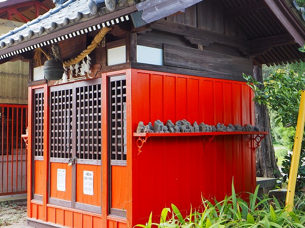
社の左右に棚があり、そこにモンキーさんたちが並んでいた。
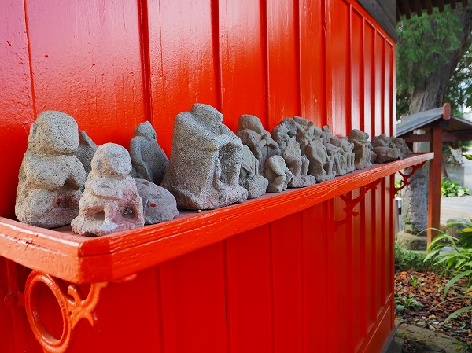
右サイド。
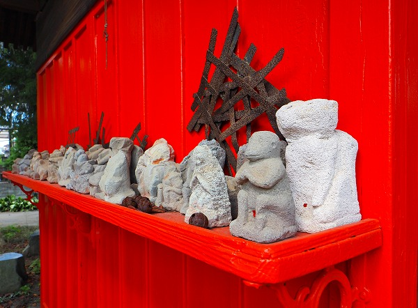
左サイド。
基本的に合掌型が多かったが、手を膝に乗せている非合掌タイプも見られた。
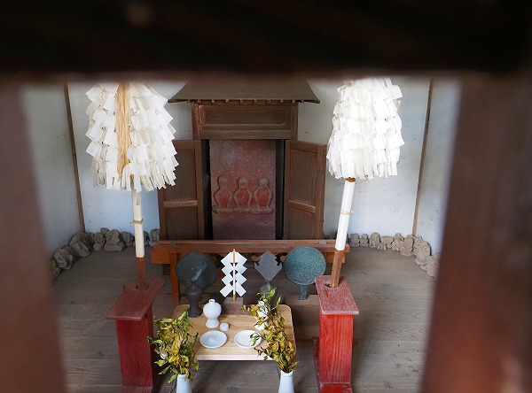
社の中を覗くと中央に赤く塗られた三猿の石碑が。
壁際にはやはり石猿が並んでいた。
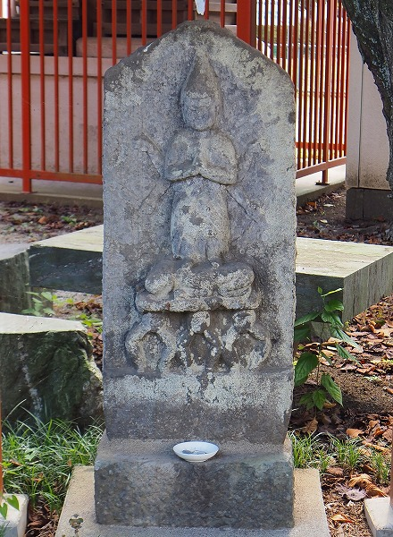
裏には庚申の石像があった。
やはりお猿つながり、という事なのか？
（2024.09.）
次は久喜市小林の
山王社。
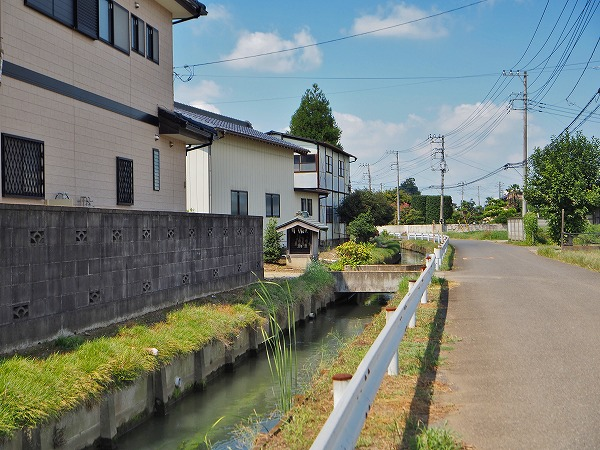
用水の脇にチョコンと小さな祠が建っていた。
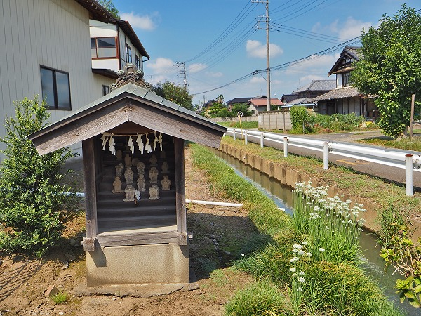
長閑なところだ。
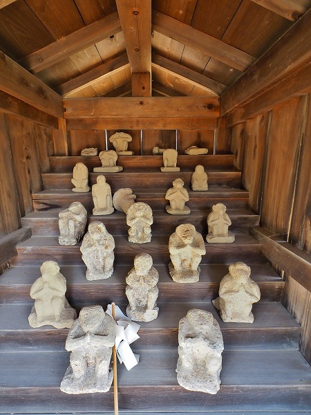
中には雛壇状に猿が並んでいる。
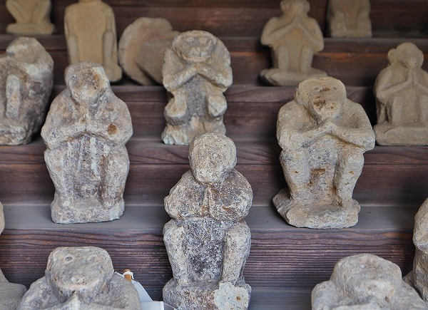
元々は屋外に置かれていたのだろうか？
手前の方の猿はやや黒ずんでいる。
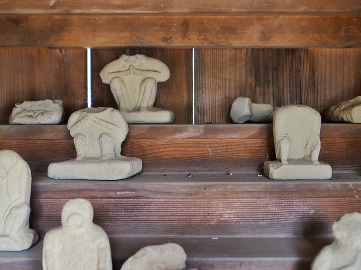
奥の方の猿は首がとれていた。
古い物なのだろうか。
ここも
ほぼ合掌型だった。
（2024.09.）
次は北本市高尾の
山王神社。
入口に市指定有形民俗文化財 山王神社御神体他石刻猿一括とあった。
文化財のモンキーさんたちである。
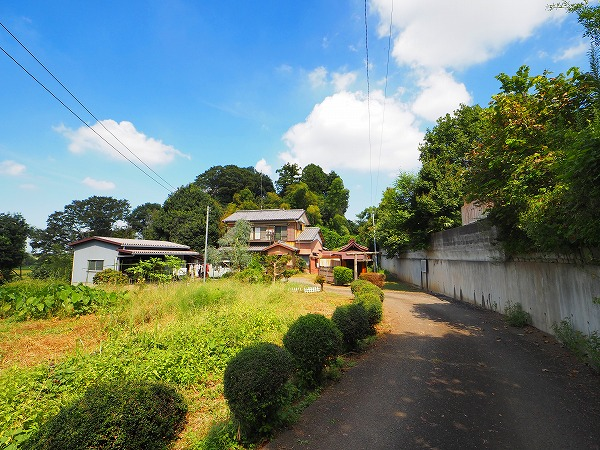
あれれ？人ん家に迷い込んじゃったかな？7
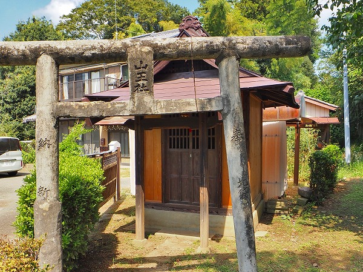
と思ったらその入口に山王社はあった。
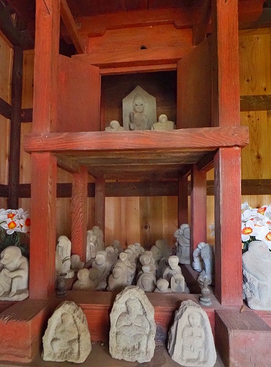
内部には2階建ての祭壇のようなものがあり、上には御神体が祀られている。
その下にはモンキーたちが数十体座っている。
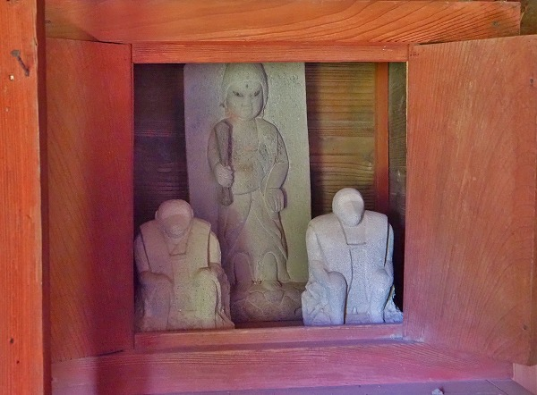
御神体は庚申か帝釈天と言われている。
左右にモンキーを従わせている。
この猿はちゃんちゃんこを着て手を膝に置いている。
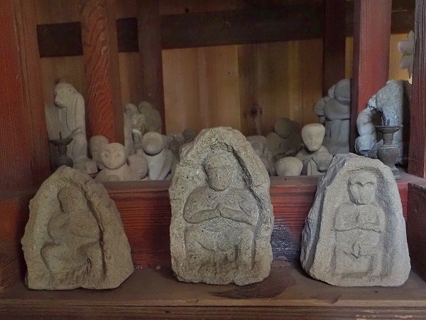
一方下にいる猿は合掌型と非合掌型の混成。。
コレをどう見るか？
手を膝に置いている猿は恐らく
東京の日枝神社の男猿がモデルなのではなかろうか。
あれも両手を膝に添え、ちゃんちゃんこではないが着物を身に着けている。
神様の眷属としての務めを果たすためあえて合掌型ではなく、眷属っぽさを強調したのかも知れない。
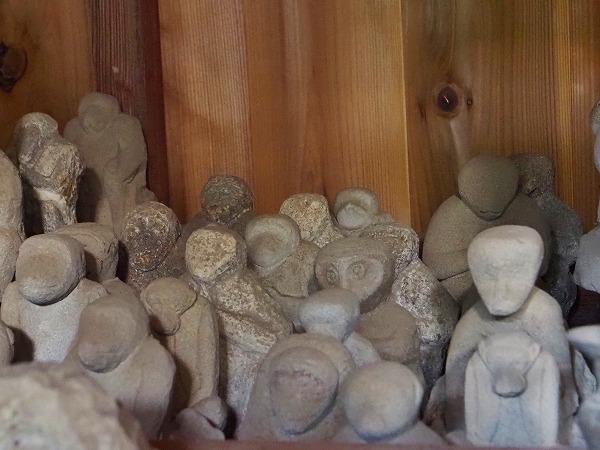
一方
合掌している猿はこの地方特有の形状なのではないかと思える。
これも個人的な意見（というか妄想）だが、全国に数多ある
くくり猿に着想を得たのではなかろうか？
ホラ、手足を縛られたポーズって見ようによっては合掌してるように見えないすか。
あくまでも個人的な感想ですが。
この先長いので一旦休憩しましょう。
（2024.09.）